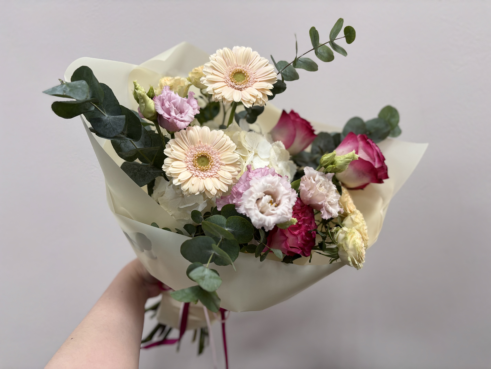

12 мая 2026
Как сохранить свежесть букета дольше
Простые рекомендации по уходу за цветами, чтобы букет радовал вас максимально долго.
Читать статьюПолезные статьи о выборе букетов, уходе за цветами, трендах флористики и оформлении подарков.
Простые рекомендации по уходу за цветами, чтобы букет радовал вас максимально долго.
Читать статью
Разбираем популярные варианты букетов для разных поводов и настроения.
Читать статью
Минимализм, пастельные оттенки и необычные композиции в современной флористике.
Читать статью
Подбираем свадебные композиции под стиль мероприятия и образ невесты.
Читать статью